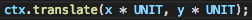
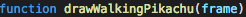
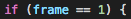
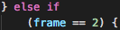
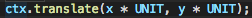

const
- makes the UNIT a constant term

function init ()
- makes a system that if the first canvas is not working, goes ahead and opens the second one that is up
next until it finds a perfectly running code

if
- makes the function complete by making the frame uploaded on the website

else if
- if the first function cannot run, it will automatically run the else if functions and upload that
canvas on to the website

translation
- of a ctx
- translates UNIT into somewhere else on the x, y axis
